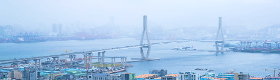
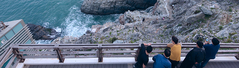
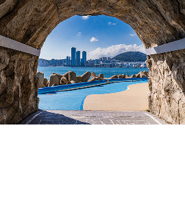
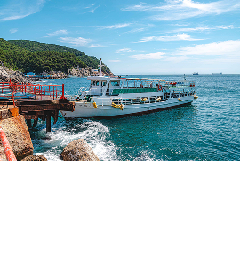
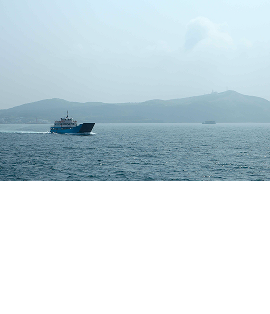
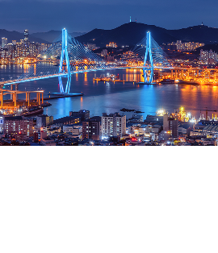
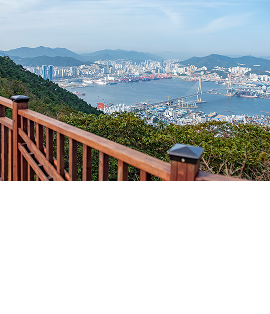
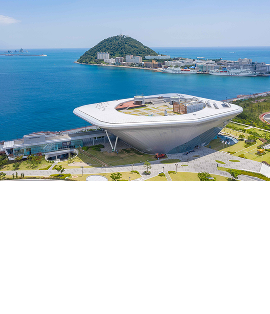

영도를 알차게 둘러보는 방법 !
자신과 어울리는 코스를 찾아보아요 .
영도 여행길
해안선을 따라 핀 분홍빛 벚꽃 터널, 흰여울 🌸 윤슬이 부서지는 푸른 파도와 거친 숨소리, 해녀촌 🌊 붉은 노을이 조선소 크레인 사이로 지는 밤, 봉래동 ⚓ 매서운 바닷바람 녹여주는 고소한 커피 향기, 커피거리 ☕ 해안선을 따라 핀 분홍빛 벚꽃 터널, 흰여울 🌸 윤슬이 부서지는 푸른 파도와 거친 숨소리, 해녀촌 🌊 붉은 노을이 조선소 크레인 사이로 지는 밤, 봉래동 ⚓ 매서운 바닷바람 녹여주는 고소한 커피 향기, 커피거리 ☕

영도 가이드북
관광부터 체험형 여행까지, 실속있는 여행 코스 추천 🍀
아이와, 친구와, 가족과 함께 👍
-
추천코스
코스 소개
추천 코스는 영도 코스중에서 아침부터 밤까지 가장 실용적으로 영도를 둘러볼 수 있는 코스입니다.
총 이동 거리 : 약 12.8km
권장 소요 시간 : 약 7시간
☀ Daylight️
푸른 바다 위로 윤슬이 반짝이는 흰여울과 태종대에서 영도의 청량한 낮을 만끽하세요.
☽︎︎︎ Night
봉래산의 붉은 노을부터 청학 배수지의 화려한 부산항대교 뷰까지,영도의 밤은 보석처럼 빛납니다.
-
테마별 코스
-
맞춤코스
-
트래킹 코스
봉래산 둘레길 16코스
추천 코스는 영도 코스중에서 아침부터 밤까지 가장 실용적으로 영도를 둘러볼 수 있는 코스입니다.
코스 성격 : 숲길 힐링, 파노라마 뷰 탐방
난이도 : 하(下)
주요 포인트 :
- ➊ 목장원
- ➊ 목장원
- ➊ 목장원
갈맷길 3-3 코스
추천 코스는 영도 코스중에서 아침부터 밤까지 가장 실용적으로 영도를 둘러볼 수 있는 코스입니다.
코스 성격 : 숲길 힐링, 파노라마 뷰 탐방
난이도 : 하(下)
주요 포인트 :
- ➊ 목장원
- ➊ 목장원
- ➊ 목장원
인기 관광 코스 🚩
-

부산역 → 흰여울문화마을
부산광역시 영도구 흰여울길 379
9번 , (마을)영도구 5 , (마을) 영도구 2 → 영도구 512~17분
26~33분
태종대 유원지
깎아지른 기암절벽과 푸른 바다가 어우러진 부산 대표 명소입니다.
다누비 열차로 편하게 이동하며 100년 역사의 영도등대, 탁 트인 전망대를 즐겨보세요.
-

부산역 → 흰여울문화마을
부산광역시 영도구 흰여울길 379
9번 , (마을)영도구 5 , (마을) 영도구 2 → 영도구 512~17분
26~33분
태종대 유원지
깎아지른 기암절벽과 푸른 바다가 어우러진 부산 대표 명소입니다.
다누비 열차로 편하게 이동하며 100년 역사의 영도등대, 탁 트인 전망대를 즐겨보세요.
-

부산역 → 흰여울문화마을
부산광역시 영도구 흰여울길 379
9번 , (마을)영도구 5 , (마을) 영도구 2 → 영도구 512~17분
26~33분
태종대 (유람선)
바다 위에서 태종대의 기암절벽과 탁 트인 수평선을 감상할 수 있는 특별한 코스입니다.
유람선을 타고 오륙도와 주전전자갈마당 등 영도의 비경을 가까이서 만나보세요.
-

부산역 → 흰여울문화마을
부산광역시 영도구 흰여울길 379
9번 , (마을)영도구 5 , (마을) 영도구 2 → 영도구 512~17분
26~33분
청학 배수지 전망대
보석처럼 빛나는 부산항대교의 야경을 가장 가까이서 만날 수 있는 곳입니다.
영도 여행의 마지막 코스로 들러 잊지 못할 추억을 남겨보세요.
-

부산역 → 흰여울문화마을
부산광역시 영도구 흰여울길 379
9번 , (마을)영도구 5 , (마을) 영도구 2 → 영도구 512~17분
26~33분
봉래산
봉래산은 부산항과 남해 바다를 한눈에 담을 수 있는 최고의 조망지입니다.
밤이 되면 보석처럼 빛나는 부산항대교의 환상적인 야경을 감상해 보세요.
-

부산역 → 흰여울문화마을
부산광역시 영도구 흰여울길 379
9번 , (마을)영도구 5 , (마을) 영도구 2 → 영도구 512~17분
26~33분
동삼혁신지구 (해양문화지구)
국립해양박물관을 중심으로 초대형 복합문화공간 피아크, 그리고 오션뷰 카페 스크랩과 아레아식스까지,
영도의 핫플레이스가 모두 모여 있습니다.
영도 시티투어 🚌
-
소요시간
7~8시간 소요
-
이용요금
대인 30,000원
소인 25,000원
-
운행요일
매주 금 , 토 , 일
최소 탑승 인원(6명) 미충족
시 운항이 취소될 수 있으니
양해 부탁드립니다. -
신청 방법
전화 예약:
051-410-4223
■ 예약 및 결제 안내 : 본 투어는 예약제로 운영되며, 출발 최소 5일 전까지 전화 예약과 입금을 모두 마쳐주셔야 예약이 최종 확정됩니다. 입금 확인이 되지 않을 경우 예약이 자동 취소되며 신청하지 않은 것으로 간주되오니 이점 유의해 주시기 바랍니다.
■ 예약 및 결제 안내 : 36개월 이하 영유아는 무료로 이용 가능하며, 투어 내 입장권과 체험비가 모두 포함됩니다.
코스별 베스트 리뷰 ✨
챗과 코스를 다녀간 분들의 소중한 리뷰입니다.